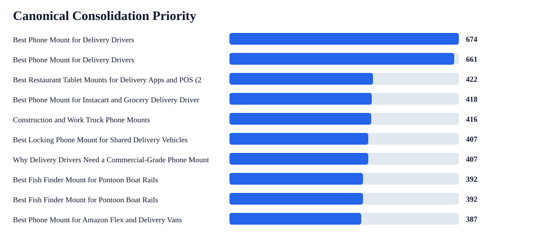
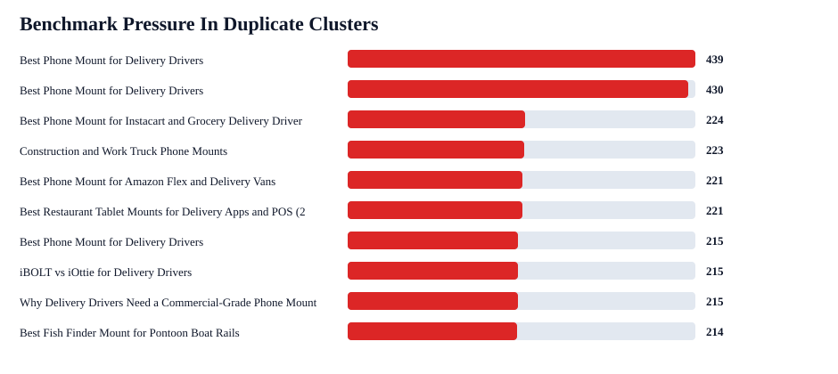

iBOLT Canonical Consolidation Plan
This prioritizes duplicate/canonical-risk pages by AI benchmark pressure so cleanup protects visibility instead of accidentally spreading or losing it.
Duplicate clusters
18
groups
Safe redirects
5
exact duplicates
Family reviews
13
manual decisions
Redirect candidates
18
URLs
With benchmark pressure
16
clusters
Need survivor review
16
clusters
Zero-mention prompts
16
inside duplicates
Competitor-only answers
47
inside duplicates


Highest-Priority Consolidations
| Priority | Type | Survivor | Merge From | Prompts | Competitors | Products | Review |
|---|---|---|---|---|---|---|---|
| 674 | canonical family review | Best Phone Mount for Delivery Drivers | Best Phone Mount for Instacart and Grocery Delivery Drivers | best phone mount for delivery drivers; best phone mount for Instacart and grocery delivery drivers | iOttie; RAM Mounts; ProClip; Peak Design | iBOLT™ xProDock™ NFC BizMount™ Suction Cup; iBOLT™ xProDock™ Bizmount™ Wedge; iBOLT™ xProDock™ Bizmount™ Console- Phone Cup Holder Mount; iBOLT Dock’n Lock POS Phone Stand; iBOLT Dock’n Lock POS Tablet Stand; +1 more | manual review, benchmark pressure is on another URL |
| 661 | canonical family review | Best Phone Mount for Delivery Drivers | Commercial-Grade Phone Mounts for Delivery Drivers | best phone mount for delivery drivers; commercial grade phone mount for delivery drivers | iOttie; RAM Mounts; ProClip; Arkon | iBOLT™ xProDock™ NFC BizMount™ Suction Cup; iBOLT™ xProDock™ Bizmount™ Wedge; iBOLT™ xProDock™ Bizmount™ Console- Phone Cup Holder Mount; iBOLT Dock’n Lock POS Phone Stand; iBOLT Dock’n Lock POS Tablet Stand; +1 more | manual review, topic family not exact duplicate |
| 422 | canonical family review | Best Restaurant Tablet Mounts for Delivery Apps and POS (2026 Guide) | Best Tablet Mount for Restaurant POS and Delivery Apps | best tablet mount for restaurant POS and delivery apps | Mount-It; Bouncepad; Square; Garmin; CTA Digital; Heckler; Arkon; RAM Mounts | iBOLT™ LockPro™ Drill Base Locking Tablet Stand- Point of Purchase/POS Mount; iBOLT Quad Tablet Tower TabDock™ Stand; iBOLT Dock’n Lock Drill Base Locking Dual Tablet Stand; iBOLT™ 20mm Metal Ball Suction Cup Base; iBOLT™ 20mm to 4 Prong Composite Ball Adapter; +1 more | manual review, benchmark pressure is on another URL |
| 418 | safe duplicate redirect | Best Phone Mount for Instacart and Grocery Delivery Drivers | Best Phone Mount for Instacart and Grocery Delivery Drivers | best phone mount for Instacart and grocery delivery drivers | iOttie; RAM Mounts; Peak Design | iBOLT Moto-Vise™ IncrediBOLT™ Heavy Duty Phone Clamp / Handlebar / Rail Mount; iBOLT 22mm ExtendiBOLT Triple Suction Cup Mount; iBOLT Moto-Vise™ Heavy Duty Phone Dual Arm Handlebar / Rail Mount; iBOLT Moto-Vise™ Heavy Duty Phone Handlebar / Rail Mount; iBOLT Moto-Vise™ IncrediBOLT™ 360 Heavy Duty Phone Clamp / Handlebar / Rail Mount; +1 more | confirm survivor, benchmark pressure is on another URL |
| 416 | canonical family review | Construction and Work Truck Phone Mounts | Best Phone Mount for Construction Vehicles and Work Trucks | best phone mount for construction vehicles and work trucks | RAM Mounts; Arkon; iOttie; ProClip; Tackform | iBOLT™ xProDock™ Bizmount™ Amps; iBOLT Phone Dock’n Lock IncrediBOLT™ AMPS w/ 4.25” Arm Locking Drill Base Mount for Smartphones; iBOLT Phone Dock'n Lock 2" IncrediBOLT™ AMPS Drill Base Mount; iBOLT Moto-Vise™ XL Holder w/ 25mm / 1-inch Ball; iBOLT™ Fixed Install Charger- 30W 2-Port Quick Charge 3.0 and Standard USB-A; +1 more | manual review, benchmark pressure is on another URL |
| 407 | canonical family review | Best Locking Phone Mount for Shared Delivery Vehicles | Locking Phone Mounts for Shared Delivery Vehicles | best locking phone mount for shared delivery vehicles | Arkon; RAM Mounts; iOttie; ProClip; Tackform | iBOLT Phone Dock'n Lock IncrediBOLT™ 360- Locking Phone Multi-Angle Drill Base Mount; iBOLT Phone Dock’n Lock IncrediBOLT™ AMPS w/ 4.25” Arm Locking Drill Base Mount for Smartphones; iBOLT Phone Dock'n Lock 2" IncrediBOLT™ AMPS Drill Base Mount; iBOLT™ 20mm Metal Ball Suction Cup Base; iBOLT 20mm Metal Ball to Headrest Mounting Bracket; +1 more | manual review, topic family not exact duplicate |
| 407 | canonical family review | Why Delivery Drivers Need a Commercial-Grade Phone Mount | Commercial-Grade Phone Mounts for Delivery Drivers | commercial grade phone mount for delivery drivers | Garmin; RAM Mounts; Arkon; ProClip; iOttie | iBOLT™ xProDock™ Bizmount™ Amps; iBOLT Phone Dock’n Lock IncrediBOLT™ AMPS w/ 4.25” Arm Locking Drill Base Mount for Smartphones; iBOLT™ xProDock™ NFC BizMount™ Suction Cup; iBOLT™ 20mm Metal Ball Suction Cup Base; iBOLT 20mm Metal Ball to Headrest Mounting Bracket; +1 more | manual review, benchmark pressure is on another URL |
| 392 | canonical family review | Best Fish Finder Mount for Pontoon Boat Rails | HOW TO MOUNT A FISH FINDER TO YOUR BOAT USING IBOLT MOUNTS | best fish finder mount for small boat | RAM Mounts; Garmin; Lowrance | iBOLT Universal Marine Fish Finder IncrediBOLT™ Clamp / Handlebar/ Rail Mount; iBOLT Garmin Striker 4 / Fish Finder IncrediBOLT™ 360 Clamp / Handlebar / Rail Mount; iBOLT Garmin Striker 4 / Fish Finder Handlebar; Rail Mount; iBOLT Garmin Striker 4 / Fish Finder Dual Arm Handlebar; +3 more | manual review, topic family not exact duplicate |
| 392 | canonical family review | Best Fish Finder Mount for Pontoon Boat Rails | How to mount a Fish Finder to your boat using iBOLT Mounts | best fish finder mount for small boat | RAM Mounts; Garmin; Lowrance | iBOLT Universal Marine Fish Finder IncrediBOLT™ Clamp / Handlebar/ Rail Mount; iBOLT Garmin Striker 4 / Fish Finder IncrediBOLT™ 360 Clamp / Handlebar / Rail Mount; iBOLT Garmin Striker 4 / Fish Finder Handlebar; Rail Mount; iBOLT Garmin Striker 4 / Fish Finder Dual Arm Handlebar; +3 more | manual review, topic family not exact duplicate |
| 387 | safe duplicate redirect | Best Phone Mount for Amazon Flex and Delivery Vans | Best Phone Mount for Amazon Flex and Delivery Vans | best phone mount for Amazon Flex and delivery vans | RAM Mounts; iOttie; Arkon; ProClip | iBOLT™ xProDock™ NFC BizMount™ Suction Cup; iBOLT™ xProDock™ Bizmount™ Wedge; iBOLT™ xProDock™ Bizmount™ Amps; iBOLT™ 20mm Metal Ball Suction Cup Base; iBOLT 20mm Metal Ball to Headrest Mounting Bracket; +1 more | confirm AEO refresh URL policy |
| 387 | canonical family review | iBOLT vs iOttie for Delivery Drivers | Best Phone Mount for Delivery Drivers | best phone mount for delivery drivers | iOttie; RAM Mounts; ProClip | iBOLT™ xProDock™ NFC BizMount™ Suction Cup; iBOLT™ xProDock™ Bizmount™ Wedge; iBOLT™ xProDock™ Bizmount™ Console- Phone Cup Holder Mount; iBOLT Dock’n Lock POS Phone Stand; iBOLT Dock’n Lock POS Tablet Stand; +1 more | manual review, benchmark pressure is on another URL |
| 384 | canonical family review | Best Phone Mount for Delivery Drivers | Best Phone Mount for Instacart and Grocery Delivery Drivers | best phone mount for delivery drivers | iOttie; RAM Mounts; ProClip | iBOLT™ xProDock™ NFC BizMount™ Suction Cup; iBOLT™ xProDock™ Bizmount™ Wedge; iBOLT™ xProDock™ Bizmount™ Console- Phone Cup Holder Mount; iBOLT Dock’n Lock POS Phone Stand; iBOLT Dock’n Lock POS Tablet Stand; +1 more | manual review, topic family not exact duplicate |
| 376 | canonical family review | Best Locking Tablet Stand for Food Trucks and Quick-Service Restaurants | Best Tablet Mount for Food Trucks and Quick-Service Counters | best locking tablet stand for food trucks and quick service restaurants | CTA Digital; Heckler; Kensington; Mount-It; RAM Mounts; Bouncepad | iBOLT™ LockPro™ Drill Base Locking Tablet Stand- Point of Purchase/POS Mount; iBOLT Dock’n Lock Drill Base Locking Tablet Stand; iBOLT™ LockPro™ Metal Locking Tablet Drill Base Mount; iBOLT 25mm / 1 inch Composite AMPS Adapter Plate; iBOLT 25mm / 1 inch to Dual 17mm Metal Ball Adapter; +1 more | manual review, topic family not exact duplicate |
| 351 | safe duplicate redirect | Magnetic vs Clamp Phone Mounts for Delivery Work | Magnetic vs Clamp Phone Mounts for Delivery Work | magnetic vs clamp phone mounts for delivery work | iOttie; RAM Mounts | iBOLT ChargeDock USB-C AMPS Ultimate Magnetic Vehicle Dock/Mount/Holder w/ 2m USB Certified Type C to USB-A Charging Cable; iBOLT™ xProDock™ NFC BizMount™ Suction Cup; iBOLT Phone Dock'n Lock IncrediBOLT™ 360- Locking Phone Multi-Angle Drill Base Mount; iBOLT™ 20mm Metal Ball Suction Cup Base; iBOLT 20mm Metal Ball to Headrest Mounting Bracket; +1 more | confirm AEO refresh URL policy |
| 276 | canonical family review | iBOLT vs RAM for Fleet Phone Mounting | iBOLT vs RAM for Fleet Mounts | iBolt vs RAM for fleet phone mounting; ibolt vs ram mount | RAM Mounts | iBOLT™ xProDock™ Bizmount™ Amps; iBOLT Phone Dock’n Lock IncrediBOLT™ AMPS w/ 4.25” Arm Locking Drill Base Mount for Smartphones; iBOLT™ xProDock™ Bizmount™ Console- Phone Cup Holder Mount; ChargeDock USB-C; iBOLT 17mm Dual Ball to “Sticky” Suction Cup Mount Base compatible w/ Garmin GPS and iBOLT Phone Holders; +1 more | manual review, benchmark pressure is on another URL |
| 217 | canonical family review | iBOLT vs Bouncepad vs Mount-It for Restaurant Tablet Security | iBOLT vs Bouncepad for Restaurant Tablet Security | iBolt vs Bouncepad vs Mount-It for restaurant tablet security | Bouncepad; Mount-It; RAM Mounts | iBOLT™ LockPro™ Drill Base Locking Tablet Stand- Point of Purchase/POS Mount; iBOLT Tablet Tower- Dock’n Lock POS Locking Drill Base Mount - with 3 Tablet Holders; iBOLT™ Dock'n Lock Bizmount™ AMPS- Heavy Duty Industrial Composite Locking drill base Mount for all 7" - 10" tablets; iBOLT 25mm / 1 inch Composite AMPS Adapter Plate; iBOLT 25mm / 1 inch to Dual 17mm Metal Ball Adapter; +1 more | manual review, topic family not exact duplicate |
Redirect Map
| Priority | Type | From | To | Review |
|---|---|---|---|---|
| 674 | canonical family review | https://iboltmounts.com/blogs/news/best-phone-mount-for-instacart-and-grocery-delivery-drivers | https://iboltmounts.com/blogs/news/best-phone-mount-delivery-drivers-aeo-refresh | manual review, benchmark pressure is on another URL |
| 661 | canonical family review | https://iboltmounts.com/blogs/news/commercial-grade-phone-mounts-delivery-drivers-aeo-refresh | https://iboltmounts.com/blogs/news/best-phone-mount-delivery-drivers-aeo-refresh | manual review, topic family not exact duplicate |
| 422 | canonical family review | https://iboltmounts.com/blogs/news/best-tablet-mount-for-restaurant-pos-and-delivery-apps | https://iboltmounts.com/blogs/news/best-restaurant-tablet-mounts-for-delivery-apps-and-pos-2026-guide | manual review, benchmark pressure is on another URL |
| 418 | safe duplicate redirect | https://iboltmounts.com/blogs/news/best-phone-mount-for-instacart-and-grocery-delivery-drivers | https://iboltmounts.com/blogs/news/best-phone-mount-instacart-grocery-delivery-aeo-refresh | confirm survivor, benchmark pressure is on another URL |
| 416 | canonical family review | https://iboltmounts.com/blogs/news/best-phone-mount-for-construction-vehicles-and-work-trucks | https://iboltmounts.com/blogs/news/construction-work-truck-phone-mounts-aeo-refresh | manual review, benchmark pressure is on another URL |
| 407 | canonical family review | https://iboltmounts.com/blogs/news/locking-phone-mounts-shared-delivery-vehicles-aeo-refresh | https://iboltmounts.com/blogs/news/best-locking-phone-mount-for-shared-delivery-vehicles | manual review, topic family not exact duplicate |
| 407 | canonical family review | https://iboltmounts.com/blogs/news/commercial-grade-phone-mounts-delivery-drivers-aeo-refresh | https://iboltmounts.com/blogs/news/why-delivery-drivers-need-a-commercial-grade-phone-mount | manual review, benchmark pressure is on another URL |
| 392 | canonical family review | https://iboltmounts.com/blogs/news/how-to-mount-a-fish-finder-to-your-boat-using-ibolt-mounts | https://iboltmounts.com/blogs/news/best-fish-finder-mount-for-pontoon-boat-rails | manual review, topic family not exact duplicate |
| 392 | canonical family review | https://iboltmounts.com/blogs/news/how-to-mount-a-fish-finder-to-your-boat-using-ibolt-mounts-1 | https://iboltmounts.com/blogs/news/best-fish-finder-mount-for-pontoon-boat-rails | manual review, topic family not exact duplicate |
| 387 | safe duplicate redirect | https://iboltmounts.com/blogs/news/best-phone-mount-amazon-flex-delivery-vans-aeo-refresh | https://iboltmounts.com/blogs/news/best-phone-mount-for-amazon-flex-and-delivery-vans | confirm AEO refresh URL policy |
| 387 | canonical family review | https://iboltmounts.com/blogs/news/best-phone-mount-delivery-drivers-aeo-refresh | https://iboltmounts.com/blogs/news/ibolt-vs-iottie-delivery-drivers-aeo-refresh | manual review, benchmark pressure is on another URL |
| 384 | canonical family review | https://iboltmounts.com/blogs/news/best-phone-mount-instacart-grocery-delivery-aeo-refresh | https://iboltmounts.com/blogs/news/best-phone-mount-delivery-drivers-aeo-refresh | manual review, topic family not exact duplicate |
| 376 | canonical family review | https://iboltmounts.com/blogs/news/best-tablet-mount-food-trucks-quick-service-aeo-refresh | https://iboltmounts.com/blogs/news/best-locking-tablet-stand-for-food-trucks-and-quick-service-restaurants | manual review, topic family not exact duplicate |
| 351 | safe duplicate redirect | https://iboltmounts.com/blogs/news/magnetic-vs-clamp-phone-mount-delivery-work-aeo-refresh | https://iboltmounts.com/blogs/news/magnetic-vs-clamp-phone-mounts-for-delivery-work | confirm AEO refresh URL policy |
| 276 | canonical family review | https://iboltmounts.com/blogs/news/ibolt-vs-ram-fleet-mounts-aeo-refresh | https://iboltmounts.com/blogs/news/ibolt-vs-ram-for-fleet-phone-mounting | manual review, benchmark pressure is on another URL |
| 217 | canonical family review | https://iboltmounts.com/blogs/news/ibolt-vs-bouncepad-restaurant-tablet-security-aeo-refresh | https://iboltmounts.com/blogs/news/ibolt-vs-bouncepad-vs-mount-it-for-restaurant-tablet-security | manual review, topic family not exact duplicate |
| 112 | safe duplicate redirect | https://iboltmounts.com/blogs/news/how-to-mount-a-fish-finder-to-your-boat-using-ibolt-mounts-1 | https://iboltmounts.com/blogs/news/how-to-mount-a-fish-finder-to-your-boat-using-ibolt-mounts | |
| 112 | safe duplicate redirect | https://iboltmounts.com/blogs/news/top-5-mounts-for-the-samsung-galaxy-a7-lite-tablet-1 | https://iboltmounts.com/blogs/news/top-5-mounts-for-the-samsung-galaxy-a7-lite-tablet |